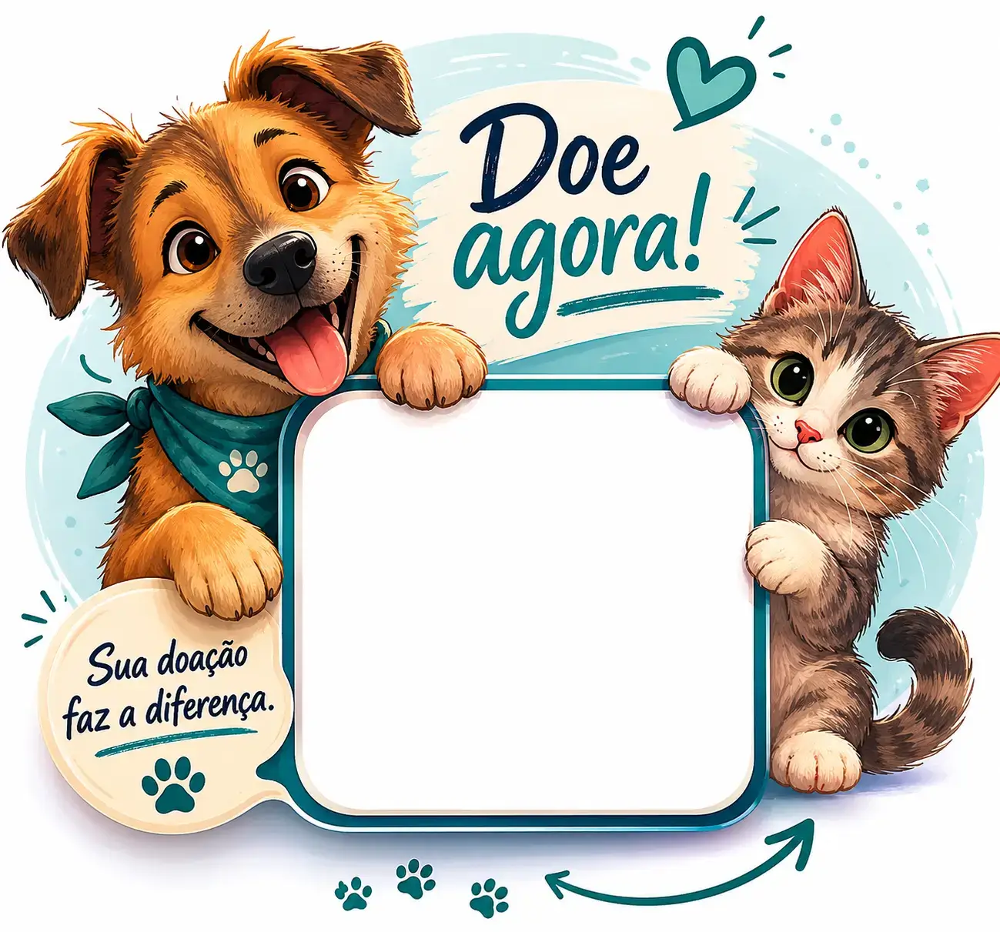

A ImpactFlow ajuda abrigos e protetores de animais a arrecadarem mais através de páginas fluidas, acolhedoras e integradas com pagamentos instantâneos.
A urgência e a comoção pelos animais muitas vezes esbarram em barreiras tecnológicas frias e obsoletas.
Em resgates críticos, telas que demoram para carregar dispersam a intenção de apoio imediato do doador.
Formulários extensos e a falta de links diretos de Pix reduzem drasticamente as contribuições impulsivas.
Sem um apelo estético humanizado, o potencial benfeitor não visualiza o impacto real da sua ajuda.
Unimos segurança financeira e interfaces empáticas para aproximar corações generosos dos animais que mais necessitam.
Visual acolhedor focado em destacar histórias reais de resgate.
Processamento transparente com confirmação instantânea em tela.
Barras de progresso elegantes que motivam novas microdoações.
Interface projetada com precisão para toques e ações rápidas no smartphone.
Uma estrutura premium e adaptada para refletir a seriedade e a doçura do seu projeto de proteção animal.
Gateways de alta fidelidade ligam as doações diretamente à conta bancária oficial da sua instituição.
Acompanhe o fluxo de entradas em relatórios claros, permitindo focar no que importa: salvar vidas.
"Migrar nossas arrecadações para a estrutura da ImpactFlow mudou nossa realidade. A facilidade do Pix dinâmico impulsionou nossas doações noturnas em resgates."
"O cuidado estético e a clareza nas metas geraram imensa confiança nos nossos apoiadores. Arrecadamos o valor da reforma do gatil em tempo recorde."
"A velocidade de carregamento mobile salvou nossa campanha de emergência veterinária. Conseguimos centralizar os apoios sem nenhuma fricção."
Faça uma simulação rápida e comprove a leveza com que os seus doadores contribuirão para a alimentação e o tratamento dos animais.
O repasse é processado de forma direta pelo ecossistema financeiro parceiro e encaminhado imediatamente à conta bancária jurídica vinculada à instituição.
Sim. A infraestrutura possibilita a programação de doações contínuas e recorrentes facilitando a previsibilidade financeira da ONG.
Não possuímos custos fixos de adesão. Há apenas uma pequena taxa sobre transações bem-sucedidas dedicada a manter a estabilidade dos servidores em campanhas volumosas.
Totalmente. O painel administrativo permite flexibilidade visual para aplicar paletas, logos e fotografias marcantes dos animais acolhidos.
Sim. Desenvolvemos o carregamento com foco em performance premium resiliente a grandes picos de tráfego simultâneo.